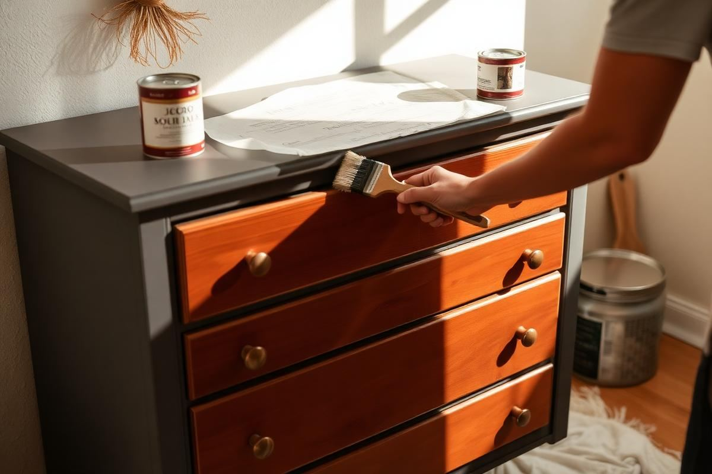
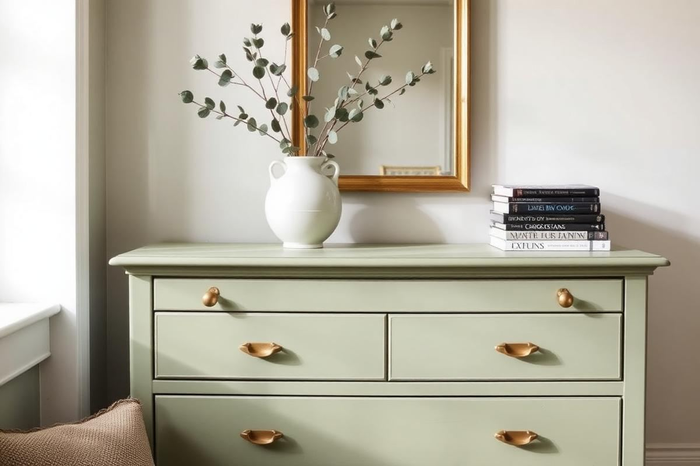
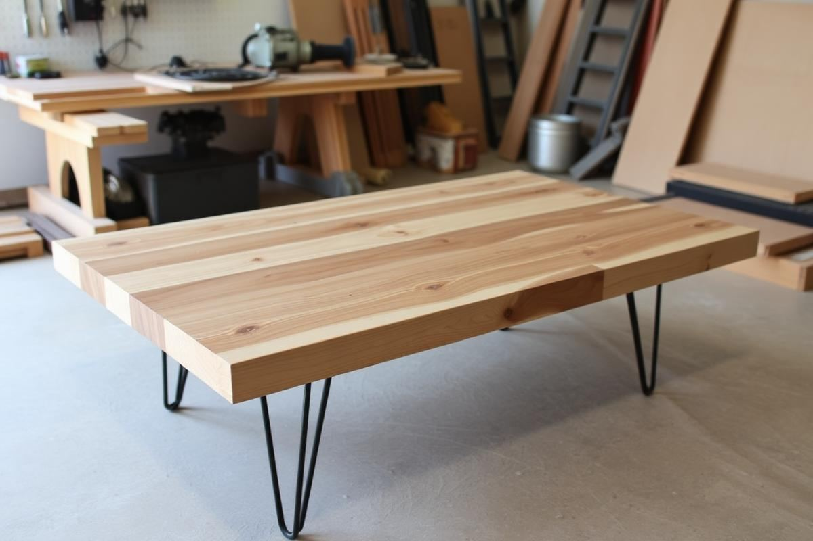

How to Paint Furniture So It Actually Lasts

How to Paint Furniture So It Actually Lasts is one of those topics where a little planning goes a long way. In this guide I walk through the process we use in real homes — not just what looks good in a photo, but what actually holds up over time.
Start here
Before you buy or move anything, measure the space and note how you actually use it. The best-looking room is one that matches how you live, so start with the routines: where you sit, where you drop keys, where the light falls in the afternoon.
The essentials
Focus on the pieces that do the most work. Get those right and the rest of the room comes together with much less effort. Aim for materials that patina rather than degrade, and colors you will still like in five years.
- Choose one clear focal point per room.
- Pick materials that improve with age.
- Layer textures instead of adding more colors.
- Leave visual breathing room — negative space is a design element.
Common mistakes
The mistakes we see most often are matching everything too tightly, over-scaling accessories, and skipping proper lighting. Fix those three and most rooms improve overnight.

Prepping for Perfection: Sanding and Cleaning
Before any paint touches the surface, meticulous preparation is non-negotiable for longevity. Start with a thorough cleaning. For most pieces, a mixture of 1/2 cup TSP (Trisodium Phosphate) substitute, like Krud Kutter, to 1 gallon of warm water works wonders. Use a clean cloth to wipe down all surfaces, paying close attention to nooks and crannies. Rinse thoroughly with clean water to remove any residue, then allow it to dry completely—at least 2-3 hours, or overnight in humid conditions. Any lingering grease or grime will compromise paint adhesion. Next, sanding. While it might seem tedious, proper sanding creates a 'tooth' for the paint to grip. For previously finished wood, a 150-grit sandpaper followed by a 220-grit for a smoother finish is ideal. Don't press too hard; the goal is to scuff the surface, not strip it bare. For raw wood, start with 120-grit, then move to 180-grit, and finally 220-grit. Always sand with the grain to avoid visible scratches. Vacuum all sanding dust, then wipe down with a tack cloth before proceeding.
Primer: The Unsung Hero of Durability
Never underestimate the power of a good primer. It's not just an extra step; it's the foundation for a durable paint finish and can significantly reduce the number of topcoats needed. For most furniture pieces, a high-quality, oil-based stain-blocking primer like Zinsser B-I-N Shellac-Base Primer or Kilz Original is your best bet, especially if you're dealing with older pieces prone to bleed-through (when natural wood tannins or old stains seep through new paint). Apply one to two thin, even coats with a synthetic brush or a 4-inch foam roller. Allow at least 1-2 hours drying time between coats, or as directed by the manufacturer. Shellac-based primers dry quickly, typically within 45 minutes. Sand lightly with 220-grit sandpaper after the primer is fully dry to create an even smoother surface for your topcoat, then wipe away dust with a tack cloth.
Choosing the Right Paint and Tools
Paint Type Matters for Longevity
The type of paint profoundly impacts durability. For furniture, particularly high-traffic pieces, avoid standard wall paint. Opt for acrylic latex enamel for its flexibility and ease of cleanup, or a durable oil-based enamel for a harder, more traditional finish. My go-to is often an acrylic-urethane blend, like Benjamin Moore Advance or Sherwin-Williams Emerald Urethane Trim Enamel. These offer excellent durability, chip resistance, and a smooth, factory-like finish. Expect to pay around $60-85 per gallon for a high-quality furniture paint. For a typical dresser or small cabinet, a quart (approx. $25-40) is usually sufficient for two coats.
Essential Tool Upgrade
- High-Quality Brushes: Invest in an angled sash brush (1.5-2 inches) for cutting in and detailed areas. Purdy and Wooster are reliable brands, costing $15-25 each.
- Foam Rollers: For flat surfaces, 4-inch high-density foam rollers (around $5 for a 2-pack) leave a smoother, virtually brush-stroke-free finish.
- Paint Tray Liners: Save cleanup time; a roll of 10 liners costs about $8-12.
- Detail Sander: For intricate areas, a Mouse sander (Ryobi, Black + Decker offer good options around $45-60) is invaluable for precise prep.
Applying Multiple Thin Coats (Not Thick Ones!)
This is where many DIYers go wrong, aiming for full coverage in one or two thick coats. Fight this urge! Thin coats are the secret to a smooth, durable, and professional-looking finish. Thick coats are prone to drips, uneven drying, and ultimately, chipping and peeling. Aim for 2-3 coats of paint, or even 4 if you're going from a dark color to a light one. Each coat should be opaque enough to cover, but translucent enough that you can still see faint brush strokes or minor imperfections if you really peer closely. Allow sufficient drying time between coats—typically 2-4 hours for water-based paints, and 6-8 hours for oil-based, or as per manufacturer's instructions. Applying another coat too soon can reactivate the previous one, leading to unevenness or lifting. For the smoothest possible finish, lightly sand with 220-grit or 320-grit sandpaper between paint coats, then thoroughly wipe away dust with a tack cloth before applying the next layer. This removes any tiny imperfections or dust nibs.
The Critical Topcoat and Cure Time
Your painted furniture isn't truly finished until it's protected with a topcoat. This clear protective layer shields your paint from dings, scratches, and everyday wear. For most furniture, a water-based polyurethane or polycrylic applied in 2-3 thin coats offers excellent durability without yellowing over time (a common issue with oil-based clear coats). Brands like General Finishes High Performance Water-Based Topcoat (approx. $30-40 per quart) or Minwax Polycrylic (approx. $20-25 per quart) are highly regarded. Apply with a synthetic brush or foam applicator, allowing 2-4 hours between coats. Lightly sand with 320-grit sandpaper between topcoats for ultimate smoothness, wiping away dust thoroughly. The crucial, often-overlooked step is 'cure time.' While your paint might feel dry to the touch in a few hours, it takes weeks, sometimes even a month, to fully harden and reach maximum durability. Avoid placing heavy objects, dragging items across the surface, or using harsh cleaners during this period. Treat it gently until it's fully cured for lasting results.
Key takeaways
- Match the room to how you actually live.
- Anchor with one main piece and clear lighting.
- Layer textures, not colors.
- Leave breathing room around every object.
Frequently asked questions
Where should I start?
Start with the largest piece and the light. Everything else — art, textiles, small objects — is easier to place once those two anchors are set.
What is a realistic budget?
Prioritize the pieces you touch every day. Spend more on those and less on decorative items, which are easy to swap over time.
How long should this last?
A well-chosen main piece should last 10–15 years. Refreshes come through textiles, art, and accessories, not full replacements.

Sophia Bennett is a certified interior stylist and the senior editor at Styleire. She has spent more than eight years helping homeowners and renters create warm, functional interiors, with hands-on experience across small city apartments and family homes. Her work has been informed by close collaboration with independent designers, craftspeople, and product testers.
View full profile →Related reading

Upcycling Furniture Basics: A Beginner's First Project
Your first upcycle should be a small piece with good bones. Here is how to do it right the first time.

DIY Headboard Ideas: 6 Weekends, 6 Looks
DIY Headboard Ideas: 6 Weekends, 6 Looks — a clear, editor-tested guide covering the essentials without the filler.

DIY Coffee Table Ideas That Don't Wobble
DIY Coffee Table Ideas That Don't Wobble — a clear, editor-tested guide covering the essentials without the filler.